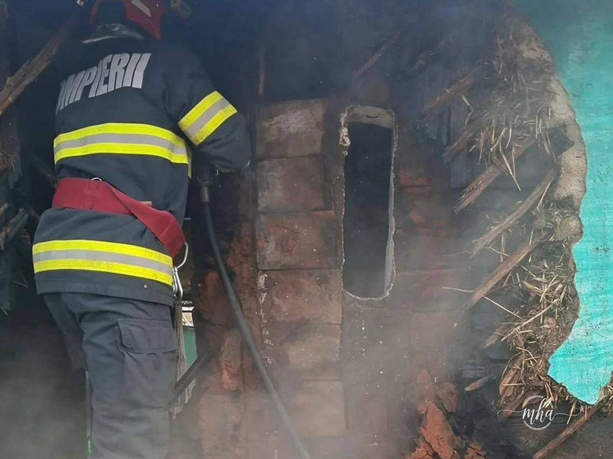

Miercuri dimineață, 18 martie 2026, un incendiu a izbucnit la o casă de locuit din localitatea Podu Grosu, comuna Bâcleș, județul Mehedinți. Alarma a fost dată rapid, iar echipele de intervenție au ajuns la fața locului în cel mai scurt timp.
La locul evenimentului s-au deplasat pompierii Stației Strehaia, cu o autospecială de stingere și o ambulanță SMURD, precum și voluntarii SVSU Bâcleș, dotați cu o autospecială de stingere. Echipele au acționat coordonat pentru a limita extinderea flăcărilor și a proteja construcțiile învecinate.
- Stația de Pompieri Strehaia — 1 autospecială de stingere + 1 ambulanță SMURD
- SVSU Bâcleș (voluntari) — 1 autospecială de stingere
- Coordonare: ISU Mehedinți
Incendiul, lichidat. Pagube materiale la un perete al casei
După intervenția rapidă a pompierilor și a voluntarilor, incendiul a fost lichidat fără să se înregistreze victime. Potrivit primelor evaluări, a fost afectat un perete al casei de locuit, construită din paiantă — un material tradițional, dar cu rezistență redusă la foc.

Cauza probabilă: coșul de fum neprotejat termic
Reprezentanții ISU Mehedinți au transmis că, potrivit primelor constatări, cauza probabilă de izbucnire a incendiului a fost coșul de fum, amplasat necorespunzător sau neprotejat termic față de materialele combustibile ale construcției.
„Incendiul a fost lichidat, fiind afectat un perete al casei de locuit construită din paiantă. Cauza probabilă de izbucnire a fost determinată de coșul de fum amplasat necorespunzător sau neprotejat termic față de materiale combustibile."
— Reprezentanții ISU Mehedinți
Atenție la coșurile de fum! Sfaturi de prevenție
ISU Mehedinți reamintește locuitorilor că coșurile de fum reprezintă una dintre principalele cauze de incendiu la casele de locuit, mai ales în sezonul rece. Autoritățile recomandă verificarea periodică și curățarea coșurilor de fum, precum și asigurarea unei distanțe de siguranță față de materialele combustibile.
Locuitorii sunt îndemnați să apeleze servicii autorizate pentru revizia și curățarea coșurilor de fum și să nu improvizeze racorduri sau amplasamente pentru sobe și centrale termice.
Sursa: ISU Mehedinți / Redactia MehedintiAzi.ro